25/10/2026 — Viêm phổi, tụt huyết áp và thất phải lớn trên siêu âm tại giường. Làm sao tránh “vòng xoáy tử vong” của tim phải?
Bản dịch tiếng Việt của bài "Pneumonia, hypotension, and large RV on bedside ultrasound. How to avoid the right sided death spiral?" – Dr. Smith’s ECG Blog. Giữ nguyên toàn bộ 11 hình ảnh của bản gốc.

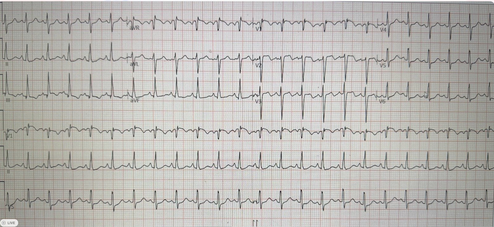
Ca này do một cựu bác sĩ nội trú gửi tới, nay cô đã là bác sĩ điều trị chính mới vào nghề.
Một bệnh nhân đến viện với viêm phổi trên lâm sàng và thiếu oxy, kèm tụt huyết áp.
Siêu âm tim tại giường được làm ngay và cựu bác sĩ nội trú lập tức nhận ra thất phải (RV) lớn. Cô ghi nhận thất phải không chỉ lớn mà còn có thành dày, và nghi ngờ phì đại thất phải (RVH).
Sau đó cô ghi điện tâm đồ. Đây là bản ghi:

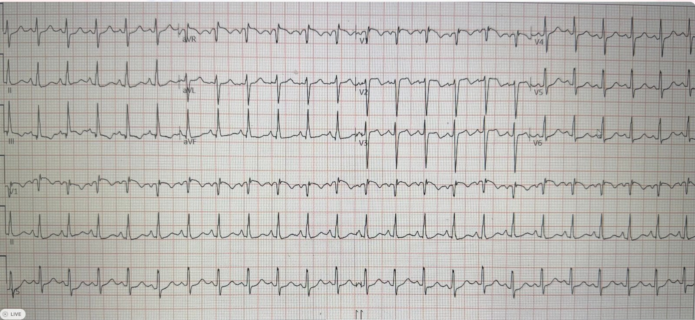
Bản ghi này có 1) nhịp nhanh, 2) sóng T đảo ngược ở V1-V3 và chuyển đạo III, và 3) dấu hiệu S1Q3T3. Vì vậy cần coi đây là tăng gánh tim phải cấp (acute right heart strain, ARHS) cho tới khi chứng minh được điều ngược lại. Ngoài ra, hình thái sóng T đảo ngược ở các chuyển đạo trước tim bên phải gợi ý tăng gánh tim phải hơn là hội chứng vành cấp (ACS).
Xem bài này: Is this ECG easy for you yet? (Điện tâm đồ này đã dễ với bạn chưa?)
Cựu bác sĩ nội trú này đã nhận ra hình ảnh đó.
Hãy nhớ rằng tăng gánh tim phải cấp không chỉ do thuyên tắc phổi gây ra, mà còn do bất kỳ nguyên nhân nào làm tăng cấp tính sức cản mạch phổi, chẳng hạn thiếu oxy.
Mô hình AI điện tâm đồ của PMCardio có tên haRVey cho điểm tăng gánh tim phải cấp là 99,7, gần như đặc hiệu hoàn toàn.
Tuy nhiên, như đã nói ở trên, cựu bác sĩ nội trú thấy thất phải phì đại trên siêu âm, nên cô nghi ngờ RVH mạn tính kèm theo khả năng tăng gánh tim phải cấp.
Cô cho chụp CT mạch phổi (CTPA), hay như một số người gọi là CTPE (cách gọi mà tôi thấy hơi buồn cười!). Kết quả âm tính.
Cô ghi lại điện tâm đồ:

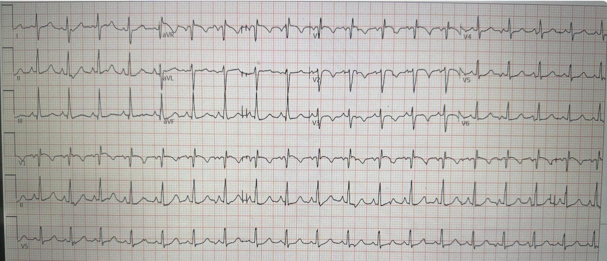
Bạn có thấy khác biệt không?
Trên bản ghi này, sóng R lớn ở V1 hiện rõ. Dấu hiệu này gặp trong RVH, không gặp trong PE. Tôi không biết vì sao nó khác với điện tâm đồ đầu tiên. Ngoài ra, sóng T không còn đảo ngược ở chuyển đạo III.
Bản ghi này gần như chẩn đoán xác định RVH.
Xem tại đây nhiều ca điện tâm đồ phì đại thất phải (RVH)
Vậy đây là đợt nặng lên của suy tim phải do viêm phổi và thiếu oxy.
Cựu bác sĩ nội trú muốn điều trị tụt huyết áp, nhưng cô biết dịch truyền có thể giết chết bệnh nhân suy thất phải (dù cấp hay mạn). Cô bắt đầu dùng norepinephrine. Cô cho bệnh nhân nhập ICU và kể lại: “Tôi gọi ICU và nói với họ rằng tôi lo ngại tăng gánh tim phải cấp, và truyền dịch có thể đẩy bệnh nhân vào ‘vòng xoáy tử vong của tim phải‘ (right sided death spiral).”
Dù vậy, bác sĩ hồi sức tích cực kỳ cựu ở ICU bảo cô truyền dịch. Cô cố phản đối, nói rằng dịch truyền có thể giết chết một bệnh nhân như thế này. Bác sĩ ICU vẫn khăng khăng, và vì là “người mới” (mới tốt nghiệp nội trú chưa lâu), cô đã làm theo.
Sau khi truyền dịch, bệnh nhân tụt huyết áp nặng hơn, xấu đi nhanh chóng và tử vong. Tất nhiên cô rất buồn và day dứt.
Chúng ta có chứng minh được dịch truyền đã giết bệnh nhân này không? Không, nhưng có thể là vậy.
Tôi có một bài giảng về suy thất phải cấp ở khoa cấp cứu, và đây là một số slide liên quan đến ca này:

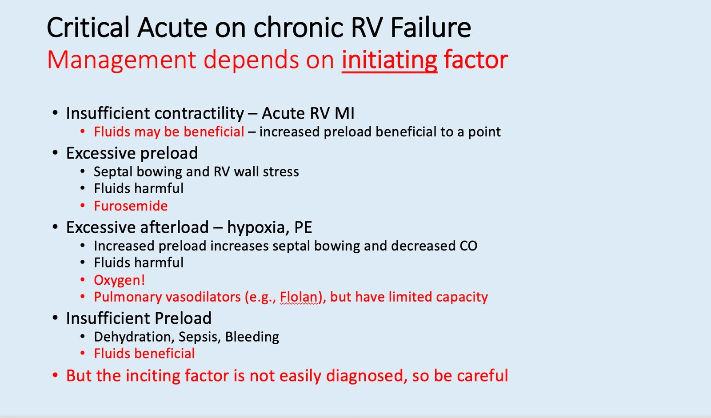

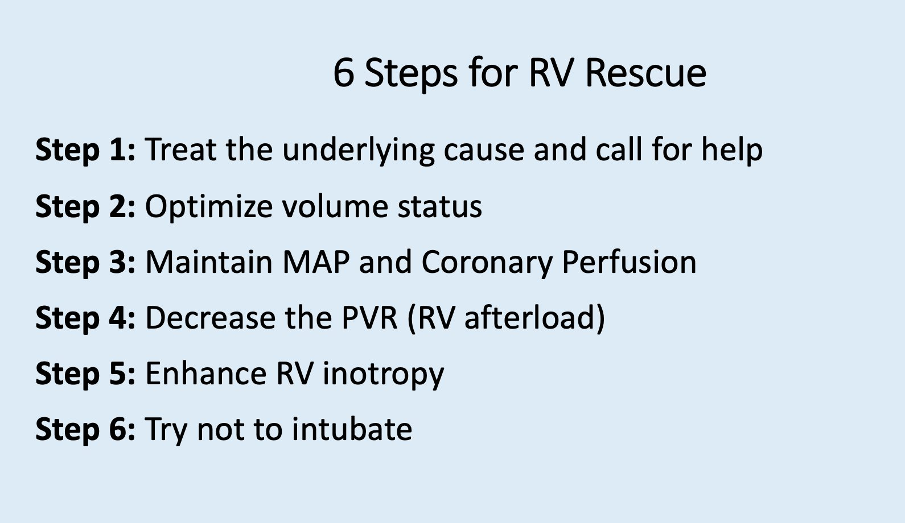

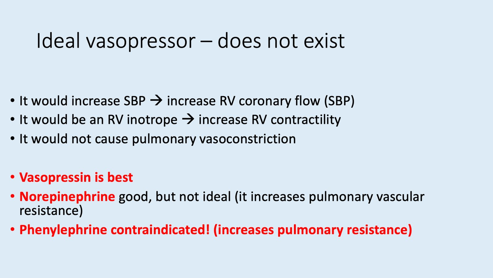

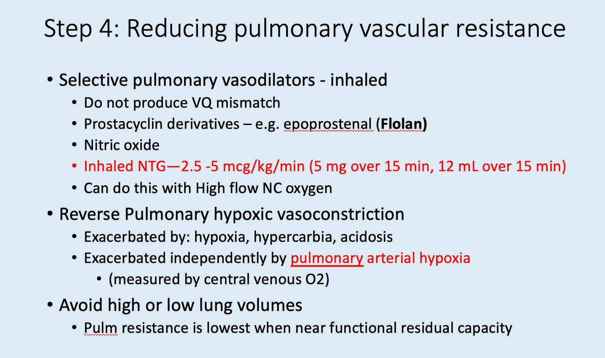
Trong ca này:

Viêm phổi khởi động vòng xoắn bệnh lý:

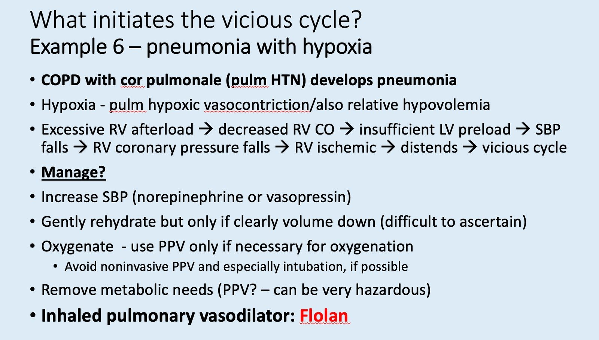
Đừng đặt nội khí quản trừ khi thật sự cần thiết:

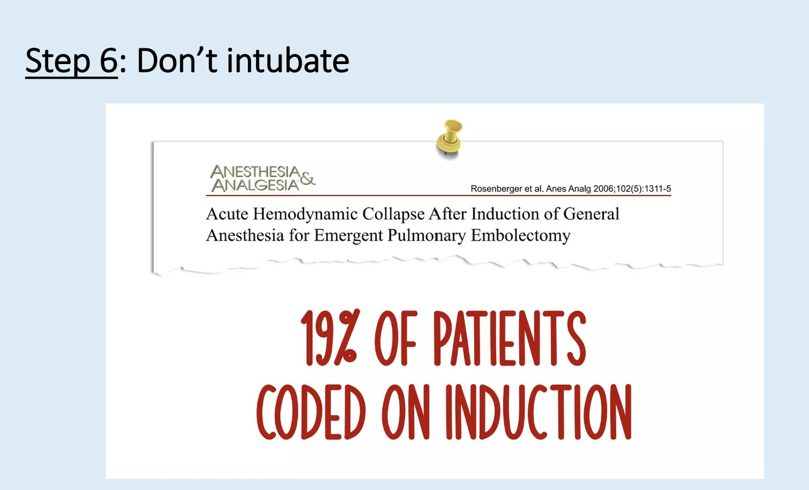
Chỉ đặt nội khí quản khi thật sự bắt buộc

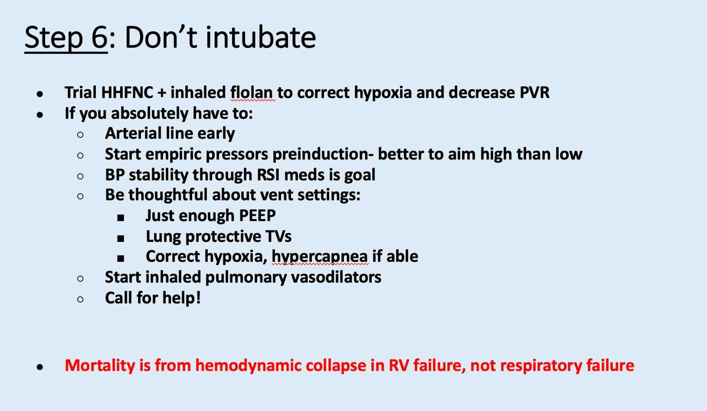
Những điểm cần học:
- Dịch truyền có thể rất nguy hiểm cho bệnh nhân sốc có suy thất phải.
- Sóng R lớn ở V1 rất đặc hiệu cho phì đại thất phải mạn tính (V1 được đặt ngay trên thất phải).
- RVH bị bỏ sót trên điện tâm đồ ngay cả bởi các chuyên gia về suy thất phải. Xem bài này: COPD exacerbation, followed by cardiac arrest (Đợt cấp COPD, sau đó ngừng tim).
- RVH hiếm khi được nhận ra trên điện tâm đồ. Điện tâm đồ RẤT hữu ích để chẩn đoán phân biệt thất phải lớn trên siêu âm tại giường giữa PE và RVH, vì PE chỉ cho thấy tăng gánh tim phải cấp, còn RVH có sóng R lớn ở V1. (V1 được đặt ngay trên thất phải; sóng R ở đây chỉ lớn khi có RVH mạn tính, không lớn khi tăng gánh tim phải cấp).
- Tôi từng nghe một bài giảng của một trong những chuyên gia hàng đầu cả nước về suy thất phải, Susan Wilcox. Bà trình bày một số ca suy thất phải không được chẩn đoán. Trong mọi ca mà bà có cho xem điện tâm đồ (theo tôi nhớ là 4 ca), điện tâm đồ đều cho thấy RVH, nhưng Dr. Wilcox đã không nhận ra điều đó. Tôi đã liên lạc với bà để lưu ý bà về điểm này, và quả thật bà đã không nhận ra. Bà rất nhã nhặn và cảm kích khi biết được điều này.
= = =
==================================
BÌNH LUẬN CỦA TÔI, bởi KEN GRAUER, MD (8/9/2026):
Ca hôm nay của Dr. Smith thật bi thảm khi truyền tải một bài học đau đớn, trong đó bệnh nhân tử vong do xử trí suy thất phải không hợp lý. Cách thức và Lý do điều trị tình trạng phức tạp này vượt ra ngoài phạm vi của ECG Blog này. Để tham khảo — tôi thấy các nguồn sau đây đầy đủ và sâu sắc:
- Ventetuolo và Klinger — Ann Am Thorac Soc 11(5):811-822, 2014 —
- Levitt và cs. — J Clin Med 13:869, 2024 —
- Farkas — Internet Book of Critical Care (Cập nhật ngày 30/8/2026).
- NIckson và Pearlman — Life In The Fast Lane (Cập nhật ngày 22/3/2023).
Nhằm thử thách sự tinh tường của bạn đọc trong đọc điện tâm đồ — tôi tập trung bình luận vào một vài nhận xét vượt ra ngoài phần cốt lõi được chọn lọc về 2 điện tâm đồ trong ca hôm nay.
= = =
Điện tâm đồ thứ 1 đã được ghi …
Để rõ ràng, và để thuận tiện so sánh 2 bản ghi của ca hôm nay — tôi đã đặt chúng cạnh nhau trong Hình 1.
- ĐIỂM THEN CHỐT (PEARL): Như Dr. Smith đã nêu — nhận ra thay đổi kín đáo giữa 2 điện tâm đồ này có ý nghĩa lâm sàng, vì điện tâm đồ #1 gợi ý nhiều hơn đến “tăng gánh” thất phải cấp gặp trong PE cấp — trong khi điện tâm đồ #2 trông phù hợp hơn với RVH mất bù. Chẳng phải việc đánh giá những thay đổi kín đáo giữa 2 bản ghi liên tiếp DỄ HƠN nhiều khi bạn đặt cả hai điện tâm đồ cạnh nhau (như trong Hình 1) — rồi thực hiện một cách có hệ thống việc so sánh từng chuyển đạo hay sao?
Như Dr. Smith đã nêu — điện tâm đồ #1 cho thấy nhịp nhanh xoang — sóng T đảo ngược ở các chuyển đạo V1,V2,V3 và chuyển đạo III (các mũi tên ĐỎ ở những chuyển đạo này) — kèm hình ảnh S1Q3T3 ở chuyển đạo I và III. Các dấu hiệu khác trên điện tâm đồ #1 gồm:
- Sóng P cao và nhọn ở các chuyển đạo thành dưới II và aVF. Mặc dù tiêu chuẩn biên độ sóng P 2,5 mm cho RAA (bất thường nhĩ phải) chưa đạt — tôi nhận thấy mức độ nhọn rõ rệt như thế này của sóng P ở các chuyển đạo thành dưới, ngay cả khi biên độ sóng P thấp hơn — liên quan thường gặp với bệnh phổi cấp đến mức tôi dùng nó như một dấu hiệu hỗ trợ.
- Hình ảnh Qr ở chuyển đạo V1 (mũi tên VÀNG ở chuyển đạo này). Đặc biệt ở bệnh nhân có bệnh phổi — hình ảnh Qr (hoặc qR) ở chuyển đạo V1 tương quan tốt với tăng áp phổi! (Xem Hình 2 trong phần Bình luận của tôi ở cuối trang của bài ngày 12 tháng Hai năm 2023 để xem phần bàn luận có minh họa về lý do của điều này).
- ST dạng vòm (coving) và chênh lên ở các chuyển đạo thành trước V1,V2. Ngoài nhồi máu thất phải cấp và tắc LAD — ST chênh lên thành trước (thay vì sóng T đảo ngược thành trước) có thể gặp như một dấu hiệu của PE cấp, đặc biệt khi đi kèm ST dạng vòm và chênh lên ở chuyển đạo III và aVR ( = các chuyển đạo bên phải còn lại). Khi có, dấu hiệu này thường gặp ở bệnh nhân có chức năng thất phải suy giảm rõ rệt (Zhan và cs. — Ann Noninvasive Electrocardiol 19(6):543-551, 2014 – và – Omar HR — Eur Heart J: Acute Cardiovasc Care 5(8):579-586, 2016).
- Mặc dù tôi không tin rằng ST chênh lên thành trước giúp phân biệt PE cấp với RVH kèm suy thất phải cấp — vẫn nên biết các tình trạng có thể gặp dấu hiệu này.
= = =
Hình 1: Tôi đã tái hiện và đánh dấu 2 điện tâm đồ trong ca hôm nay.

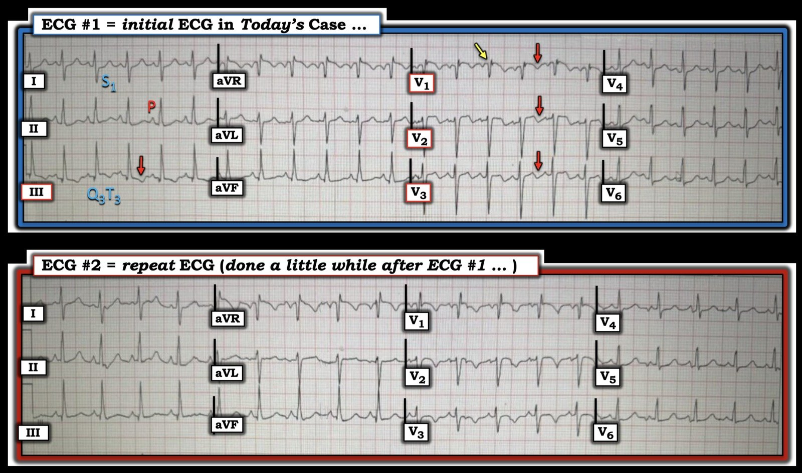
= = =
Điện tâm đồ ghi lại …
Như Dr. Smith đã nêu — trong số những khác biệt kín đáo về hình dạng giữa điện tâm đồ #1 và điện tâm đồ ghi lại #2 — có sự mất đi của hình ảnh S1Q3T3 (sóng T không còn đảo ngược ở chuyển đạo III) — và biên độ sóng R tăng ở chuyển đạo V1 (sóng R cao mới xuất hiện đột ngột này trên điện tâm đồ #2 gợi ý RVH nhiều hơn hẳn). Câu hỏi đặt ra là VÌ SAO sóng R cao phần tận cùng này ở chuyển đạo V1 lại không thấy trên điện tâm đồ #1?
- Cả điện tâm đồ #1 và điện tâm đồ #2 đều có sóng Q khởi đầu nổi bật ở chuyển đạo V1 — và ST dạng vòm kèm ST chênh lên nhẹ ở các chuyển đạo thành trước.
- Thay vì một thay đổi về huyết động thất phải — tôi nghĩ những lý do hợp lý nhất cho việc tăng biên độ sóng R ở chuyển đạo V1 trên điện tâm đồ #2 là: i) Tần số tim nhanh hơn nhiều trên điện tâm đồ #1 (~140/phút trên điện tâm đồ #1 — so với 115/phút trên điện tâm đồ #2) — vì hình dạng QRST đôi khi có thể bị thay đổi do nhịp nhanh; — và, ii) Thay đổi vị trí đặt điện cực chuyển đạo trước tim (Thấy rõ nhất trong Hình 1 khi so sánh hình dạng QRST của chuyển đạo V3 trên cả hai bản ghi — kèm thay đổi kín đáo hơn về sự tồn tại của sóng S ở các chuyển đạo ngực bên V4,V5,V6).
- Ủng hộ cho tác động của việc thay đổi vị trí đặt điện cực chuyển đạo trước tim — là dấu hiệu kín đáo của một khía âm sau sóng r tận rất nhỏ có trên điện tâm đồ #1.
= = =
= = =